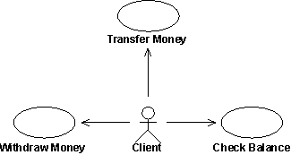

| Concept: Use Case |
 |
|
| Related Elements |
|---|
A use case instance defines a sequence of actions performed by the system that yields an observable result of value to a particular actor. ExplanationThere are several key words in this definition:
The functionality of a system is defined by different use cases, each of which represents a specific goal (observable result of value) for a particular actor. The description of a use case defines what happens in the system when the use case is performed.  In an automated teller machine the client can, for instance, withdraw money from an account, transfer money to an account, or check the balance of an account. These correspond to specific goals that the actor has in using the system. Each use case has a task of its own to perform. The collected use cases constitute all the possible ways of using the system. You should be able to determine the goal of a use-case task simply by observing its name. How to Find Use CasesSee the Guideline: Find and Outline Actors and Use Cases for guidance on finding Actors and Use Cases. How a Use Case EvolvesSee the Guideline: Detail Use Cases and Scenarios for guidance on evolving use cases. Are All Use Cases Described in Detail?There will often be use cases in your model that are so simple that they do not need a detailed description of the flow of events, a step-by-step outline is quite enough. The criteria for making this decision is that you don't see disagreement among user kind of readers on what the use case means, and that designers and testers are comfortable with the level of detail provided by the step-by-step format. Examples are use cases that describe simple entry or retrieval of some data from the system. For more information on possible formats and level of detail captured for each use case see Guideline: Use Case Formats. The Scope of a Use CaseIt is often hard to decide if a set of user-system interactions, or dialog, is one or several use cases. Consider the use of a recycling machine. The customer inserts deposit items, such as cans, bottles, and crates, into the recycling machine. When she has inserted all her deposit items, she presses a button, and a receipt is printed. She can then exchange this receipt for money. Is it one use case to insert a deposit item, and another use case to require the receipt? Or is it all one use case? There are two actions, but one without the other is of little value to the customer. Rather, it is the complete dialog with all the insertions, and getting the receipt, that is of value for the customer (and makes sense to her). Thus, the complete dialog, from inserting the first deposit item, to pressing the button and getting the receipt, is a complete case of use, a use case. Additionally, you want to keep the two actions together, to be able to review them at the same time, modify them together, test them together, write manuals for them and in general manage them as a unit. This becomes very obvious in larger systems. How Use Cases Are RealizedA use case describes what happens in the system when an actor interacts with the system to execute the use case. The use case does not define how the system internally performs its tasks in terms of collaborating objects. This is left for the use-case realizations to show. Example: In the telephone example, the use case would indicate - among other things - that the system issues a signal when the receiver is lifted and that the system then receives digits, finds the receiving party, rings his telephone, connects the call, transmits speech, and so on. In an executing system, an instance of a use case does not correspond to any particular object in the implementation model (for example, an instance of a class in the code). Instead, it corresponds to a specific flow of events that is invoked by an actor and executed as a sequence of events among a set of objects. In other words, instances of use cases correspond to communicating instances of implemented objects. We call this the realization of the use case. Often, the same objects participate in realizations of more than one use case. For example, both the use cases Deposit and Withdrawal in a banking system may use a certain account object in their realization. This does not mean that the two use cases communicate, only that they use the same object in their realization. You can view a flow of events as consisting of several subflows, which taken together yield the total flow of events. You can reuse the description of a subflow in other use cases' flow of events. Subflows in the description of one use case's flow of events may be common to those of other use cases. In the design you should have the same objects perform this common behavior for all the relevant use cases; that is, only one set of objects should perform this behavior, no matter which use case is executing. Example: In an automated teller machine system the initial subflow is the same in the flow of events of the use cases Withdraw Money and Check Balance. The flow of events of both use cases start by checking the identity of the card and the client's personal access code. A Use Case has Many Possible InstancesA use-case instance can follow an almost unlimited, but enumerable, number of paths. These paths represent the choices open to the use-case instance in the description of its flow of events. The path chosen depends on events. Types of events include:
Example: In the use case Recycle Items in the Recycling-Machine System the Customer always has two options: hand in still another deposit item or get the receipt of returned items.
Example: In the use case Withdraw Money in an automated teller machine system, the flow of events will differ if the Client asks for more money than he has in his account. Thus, the use-case instance will follow different paths. Concurrency of Use-Case InstancesInstances of several use cases and several instances of the same use case work concurrently if the system permits it. In use-case modeling, you can assume that instances of use cases can be active concurrently without conflict. The design model is expected to solve this problem, because use-case modeling does not describe how things work. One way to view this is to assume that only one use-case instance is active at a time and that executing this instance is an atomic action. In use-case modeling, the "interpreting machine" is considered infinitely fast, so that serialization of use case instances is not a problem. NameEach use case should have a name that indicates what is achieved by its interaction with the actor(s). The name may have to be several words to be understood. No two use cases can have the same name. Example: These are examples of variations of the name for the use case Recycle Items in the Recycling Machine example:
Brief DescriptionThe brief description of the use case should reflect its purpose. As you write the description, refer to the actors involved in the use case, the glossary and, if you need to, define new concepts. Example:Following are sample brief descriptions of the use cases Recycle Items and Add New Bottle Type in the Recycling-Machine System: Recycle Items: The user uses this machine to automatically have all the return items (bottles, cans, and crates) counted, and receives a receipt. The receipt is to be cashed at a cash register (machine). Add New Bottle Type: New kinds of bottles can be added to the machine by starting it in 'learning mode' and inserting 5 samples just like when returning items. In this way, the machine can measure the bottles and learn to identify them. The manager specifies the refund value for the new bottle type. Flow of Events - ContentsThe Flow of Events of a use case contains the most important information derived from use-case modeling work. It should describe the use case's flow of events clearly enough for an outsider to easily understand it. Remember the flow of events should present what the system does, not how the system is design to perform the required behavior. Guidelines for the contents of the flow of events are:
If you have used certain terms in other use cases, be sure to use the exact same terms in this use case, and that their intended meaning is the same. To manage common terms, put them in a glossary. Flow of Events - StructureThe two main parts of the flow of events are basic flow of events and alternative flows of events. The basic flow of events should cover what "normally" happens when the use case is performed. The alternative flows of events cover behavior of optional or exceptional character in relation to the normal behavior, and also variations of the normal behavior. You can think of the alternative flows of events as "detours" from the basic flow of events, some of which will return to the basic flow of events and some of which will end the execution of the use case.
The typical structure of the flow of events. The straight arrow represents the basic flow of events, and the curves represent alternative paths in relation to the normal. Some alternative paths return to the basic flow of events; whereas others end the use case. Both the basic flow of events and the alternative flows events should be further structured into steps or subflows. In doing this, your main goal should be readability of the text (see also the section Flow of Events - Style below). A rule of thumb is that a subflow should be a segment of behavior within the use case that has a clear purpose, and is "atomic" in the sense that you do either all or none of the actions described. You may need to have several levels of subflows, but if you can you should avoid it since it makes the text more complex and harder to understand. This type of written text, structured into consecutive subsections, will by its nature imply to the reader that there is a sequence between the subflows. To avoid misunderstandings, you should always point out whether the order of the subflows is fixed or not. Considerations of this kind are often related to:
To clarify where an alternative flow of events fits in the structure, you need to describe the following for each "detour" to the basic flow of events:
Example: This is an alternative subflow in the use case Return Items in the Recycling-Machine System. 2.1. Bottle Stuck If in section 1.5, Insert Deposit Items, a bottle gets stuck in the gate, the sensors around the gate and the measuring gate will detect this problem. The conveyer belt is stopped and the machine issues an alarm to call for the operator. The machine will wait for the operator to indicate that the problem has been fixed. The machine then continues in section 1.9 of the basic flow. In the example above, the alternative flow of events is inserted at a specific location in the basic flow of events. There are also alternative flow of events that can be inserted at more than one location, some can even be inserted at any location in the basic flow of events. Example: This is an alternative subflow in the use case Return Items in the Recycling-Machine System. 2.2. Front Panel is Removed If somebody removes the front panel to the Recycling machine, the can compression is deactivated. It will not be possible to start the can compression with the front panel off. The removal will also activate an alarm to the operator. When the front panel is closed again, the machine resumes operation from the location in the basic flow of events at which it was stopped. It might be tempting, if the alternative flow of events is very simple, to just describe it in the basic flow of events section (using some informal "if-then-else" construct). This should be avoided. Too many alternatives will make the normal behavior difficult to see. Also, including alternative paths in the basic flow of events section will make the text more "pseudo-code like" and harder to read. In general, extracting parts of the flow of events and describing these parts separately, can increase the readability of the basic flow of events and improve the structure of the use case and the use-case model. You can model extracted parts as:
Flow of Events - StyleYou can describe use cases in many styles. As an example we show the basic flow of events of the use case Administer Order described in three different styles, varying primarily in how formal they are. The first style, shown in example 1 below, is recommended, because it is easy to understand, and the order in which things happen is clearly evident. The text is divided into numbered and named subsections. Numbers are there to make it easy to refer to a subsection. Names of subsections will let the reader get a quick overview of the flow of events by browsing through the text reading only the headers. In example 2 below, the description of the flow of events fails to clarify the order in which things happen. If you write in this style, you and others might miss important things that concern the system. Example 3 below shows a yet another style, which can be useful if you find it difficult to express the sequence of events clearly. This pseudo-code style is more precise, but the text is hard to read and absorb for a non-technical person, especially if you want to grasp the flow of events quickly. Example 1:
Describing a use case: In this style, the text is easy to read and the flow of events is easy to follow. Aim for this style in your descriptions. Example 2:
Describing a use case: This style is readable, but there is no clear flow of events. Example 3:
Describing a use case: Here the writer has chosen a formal style using pseudocode. This style makes it hard to quickly grasp the process steps, but can be useful if the flow of events is difficult to capture precisely. Flow of Events - ExampleThe complete description of the flow of events of the use case Administer Order, including its alternative flows, could look as follows: 1. Basic Flow of Events 1.1. Start of Use Case This use case starts when the actor Operator tells the system to create a measurement order. The system will then retrieve all Network Element actors, their measurement objects and corresponding measurement functions that are available to this particular Operator. Available Network Elements are those that are in operation, and that the Operator has the authority to access. The availability of measurement functions depends on what has been set up for a particular type of measurement object. 1.2. Configure Measurement Order The system allows the actor Operator to select which Network Elements to measure and then shows which measurement objects are available for the selected Network Elements. The system allows the Operator to select from these measurement objects, and then select which measurement functions to set up for each measurement object. The system allows the Operator to enter a textual comment on the measurement order. The Operator tells the system to complete the measurement order. The system will respond by generating a unique name for the measurement order and setting up default values for when, how often, and for how long the measurement should be made. The default values are unique to each Operator. The system then allows the Operator to edit these default values. 1.3. Initialize Order The Operator tells the system to initialize the measurement order. The system will then record the identity of the creating Operator, the date of creation, and the "Scheduled" status of the measurement order. 1.4. Use Case Ends The system confirms initialization of the measurement order to the Operator, and the measurement order is made available for other actors to view. 2. Alternative Flows of Events 2.1. No Network Elements Available If in 1.1, Start of Use Case, it turns out that no Network Elements are available to measure for this Operator, the system will inform the Operator. The use case then ends. 2.2. No Measurement Functions Available If in 1.2, Configure Measurement Order, no measurement functions are available for the selected Network Elements, the system will inform the Operator and allow the Operator to select other Network elements. 2.3. Cancel Measurement Order The system will allow the Operator to cancel all actions at any point during the execution of the use case. The system will then return to the state it was in before the use case was started, and end the use case. Special RequirementsIn the Special Requirements of a use case, you describe all the requirements on the use case that are not covered by the flow of events. These are non-functional requirements that will influence the design model. See also the discussion on non-functional requirements in Concept: Requirements. You could organize these requirements in categories such as Usability, Reliability, Performance, and Substitutability, but normally there are so few of them that such grouping is not particularly value-adding. Example:In the Recycling-Machine System, a special requirement of the Return Deposit Items use case could be: The machine has to be able to recognize deposit items with a reliability of more than 95 percent. Preconditions and PostconditionsIt can be useful to use the notion of precondition and postcondition to clarify how the flow of events starts and ends. However, only use it if it is perceived as adding value by the audience of the use case.
A precondition is the state of the system and its surroundings that is required before the use case can be started. A postcondition is the states the system can be in after the use case has ended. Consider the following:
Example: A precondition for the use case Cash Withdrawal in the ATM machine: The customer has a personally-issued card that fits in the card reader, has been issued a PIN number, and is registered with the banking system. A postcondition for the use case Cash Withdrawal in the ATM machine: At the end of the use case, all account and transaction logs are balanced, communication with the banking system is reinitialized and the customer has been returned his card. Extension PointsAn extension point opens up the use case to the possibility of an extension. It has a name, and a list of references to one or more locations within the flow of events of the use case. An extension point may reference a single location between two behavior steps within the use case. It may also reference a set of discrete locations. To use named extension points will help you separate the specification of the behavior of the extending use case from the internal details of the base use case. The base use case can be modified or rearranged, as long as the names of the extension points remain the same it will not affect the extending use case. At the same time, you are not loading down the text describing the flow of events of the base use case with details of where behavior might be extended into it. Example: In a phone system, the use case Place Call can be extended by the abstract use case Show Caller Identity. This is an optional service, often referred to as "Caller ID", that may or may not have been requested by the receiving party. A description of the extension point in the use case Place Call could look as follows: Name: Show Identity Location: After section 1.9 Ring Receiving Party's Telephone. Use-Case Diagrams
You may choose to illustrate how a use case relates to actors and other use cases in a use-case diagram (in unusual
cases, more than one diagram), owned by the use case. This is useful if the use case is involved with many actors, or
has relationships to many other use cases. A diagram of this kind is of "local" character, since it shows the use-case
model from the perspective of one use case only and is not intended to explain any general facts about the whole
use-case model. Refer to Guideline: Use-Case Model for more information. |


This program and the accompanying materials are made available under the View copyright information here: OpenUP Copyright |